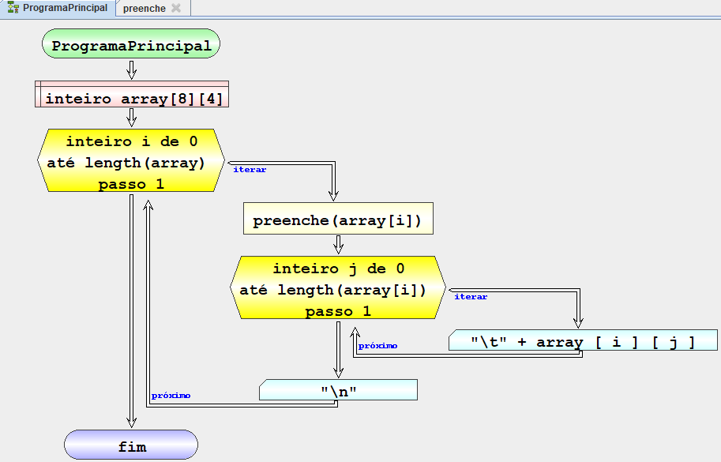
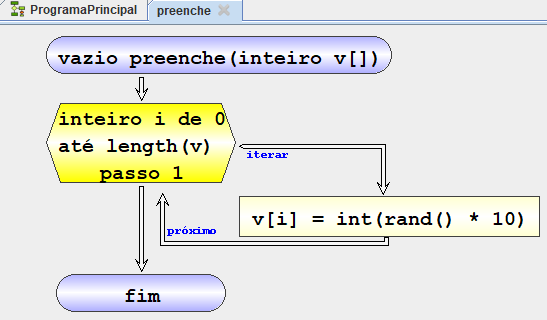

| Fluxograma | Pseudocódigo | |
|---|---|---|
|  |  |
inicio Programa principal
definir inteiro array[8][4]
iterar inteiro i de 0 até length(array) passo 1
executar preenche(array[i])
iterar inteiro j de 0 até length(array[i]) passo 1
escrever "\t" + array[i][j]
fim iterar
escrever "\n"
fim iterar
fim Programa principal
funcao vazio preenche(inteiro v[])
iterar inteiro i de 0 até length(v) passo 1
executar v[i] = int(random() * 10)
fim iterar
fim preenche
|